iOS-app för spårträning
Användarmanual
Allt du behöver för att lägga spår, spåra och följa träningen över tid.
Senast uppdaterad: 10. oktober 2026
01
Kom igång
Trax är gjord för hundförare som tränar spår. Du lägger spåret med telefonen i fickan, lägger ut föremål längs vägen och låter sedan hunden spåra medan appen visar var spårläggaren gick.
- Första gången du öppnar appen får du en kort introduktion. Tryck på ”Fortsätt” för att gå igenom den.
- Tryck på ”Tillåt platsåtkomst” och välj ”Tillåt när appen används”.
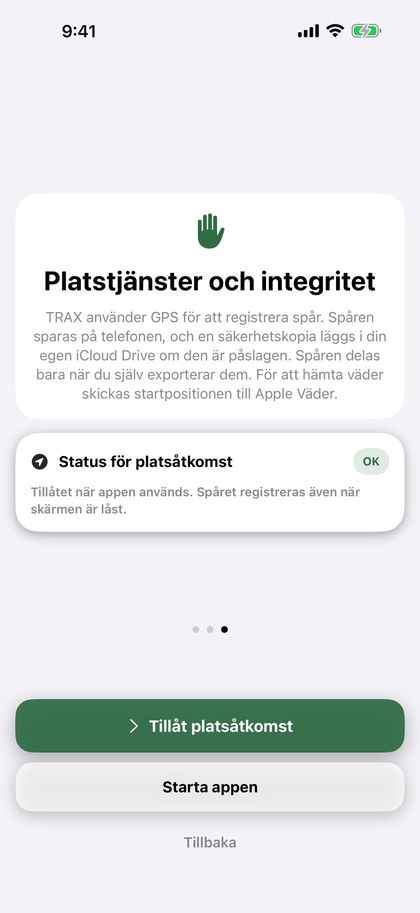
Tips: ”När appen används” räcker. När du har tryckt på ”Starta” fortsätter registreringen även när skärmen är låst eller du byter app, och iOS visar en blå markering högst upp på skärmen. Du kan ändra åtkomsten under Inställningar › Trax › Plats på din iPhone.
Trax behöver ”Exakt plats”. Utan den kan positionen bli flera hundra meter fel. Om den är avstängd ber appen om exakt plats när du ska lägga spår eller spåra, och visar kortet ”Exakt plats är av” med en länk till Inställningar. Slå på ”Exakt plats” för Trax där.
Trax och användarmanualen följer språket på telefonen: svenska, norska (bokmål) eller engelska.
02
Hemskärmen
Härifrån startar du allt, och här hittar du alla dina spår.
- ”Nytt spår” startar spårläggning.
- ”Importera” öppnar ett spår från en Trax- eller GPX-fil, till exempel ett spår som någon har skickat till dig.
- ”Redo att spåra” visar spår som har lagts men inte spårats, och hur länge sedan de lades. Står det ”Spåret pågår” har spåret startats men inte stoppats.
- ”Senaste spår” visar de tre senaste spåren som både har lagts och spårats, med antal fynd. Tryck på ett spår för att se detaljerna.
- ”Visa alla” vid ”Senaste spår” öppnar sidan ”Avslutade spår” med alla dina spår. Uppe till höger där hittar du dokumentknappen för PDF per hund och ”Redigera” för att radera flera spår.
- Om du har registrerat hundar visas knappar högst upp på sidan ”Avslutade spår”: ”Alla” och en för varje hund. Spår utan hund finns under ”Alla”. När du väljer en hund ser du bara dess spår och en sammanfattning med antal spår, hur stor andel av föremålen som har hittats, antal spår de senaste 30 dagarna och ”På spåret”, samt ett diagram över utvecklingen (se ”Hundar”). Har hunden inga avslutade spår står det ”… har inga avslutade spår ännu”. Hundar som du har raderat behåller sin knapp så länge de har spår. Vill du dölja en sådan hund håller du fingret på knappen och väljer ”Dölj från filtret”. Du kan visa den igen under Inställningar › Mina hundar › ”Tidigare hundar”.
- Om spåren på sidan har minst två spårtyper visas knappar för spårtyp under hundknapparna: ”Alla typer”, ”Spår”, ”IGP-spår” och ”Viltspår”.
- Små ikoner på varje spår visar spårtypen (en figur för spår, en rosett för IGP-spår, en droppe för viltspår), hunden (en tass), om spåret har importerats (pil in) och om du har exporterat det (pil ut).
Uppe till höger hittar du Inställningar (kugghjulet) och Användarmanual (boken).
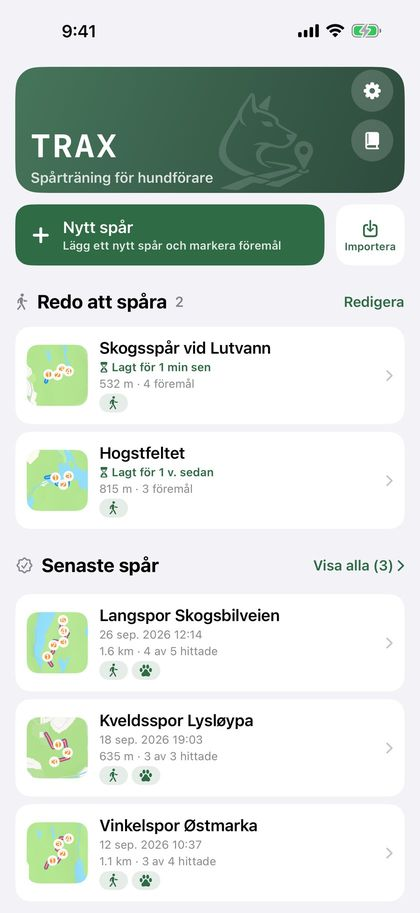
03
Lägga spår
Som spårläggare går du spåret först, medan appen registrerar rutten med GPS.
- Tryck på ”Nytt spår” på hemskärmen.
- Välj spårtyp med de tre stora knapparna: ”Spår”, ”IGP-spår” eller ”Viltspår”. ”Spår” är förvalt (se ”Spårtyp och viltspår”).
- GPS:en startar så fort skärmen öppnas. Vänta tills GPS-pricken högst upp är grön eller gul och tryck sedan på den stora ”Starta”-knappen.
- Gå spåret. Rutten ritas på kartan medan du går.
- Tryck på ”Föremål” för att lägga ut ett föremål där du står (se ”Föremål”).
- Behöver du en paus trycker du på ”Pausa”. Tryck på ”Fortsätt” för att gå vidare. Sträckan medan spåret är pausat registreras inte.
- Tryck på ”Stoppa” när spåret är lagt.
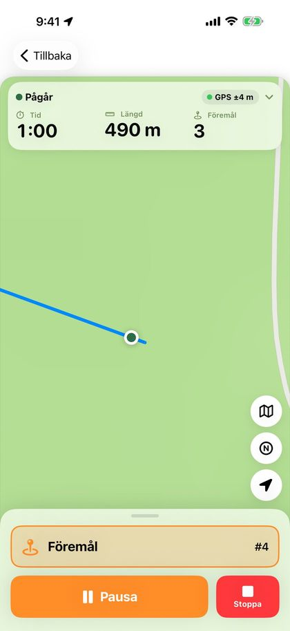
Om GPS-signalen är svag innan du startar visas en ruta under fältet högst upp. Röd betyder att du bör vänta på bättre signal, gul att du kan starta men att spåret blir mer exakt om du väntar. Rutan stängs av sig själv när signalen blir bra, eller när du trycker på ”OK, uppfattat”. Du kan alltid starta.
Fältet högst upp visar tid, längd och antal föremål med stora siffror, hur exakt GPS:en är och batterinivån. Grön prick betyder bättre än 10 meter, gul 10–25 meter och röd mer än 25 meter. Står det ”Ingen GPS” har telefonen inte haft någon position på mer än 15 sekunder. Tryck på fältet för att se när spåret startade, när positionen senast uppdaterades och koordinaten där du står.
När du trycker på ”Starta” zoomar kartan in på dig, alltid till samma vy. Om du zoomar under spåret behåller kartan den zoom du valde.
Knapparna till höger på kartan byter karta och centrerar kartan på dig igen. Kartknappen växlar mellan vanlig karta, topo och satellit. Topo är den topografiska kartan från norska Lantmäteriet (Kartverket), med höjdkurvor och stigar. Den kräver internet och visar ”© Kartverket” längst ner. Utanför Norge finns inte topo, och då går knappen direkt från karta till satellit. N-knappen byter kartriktning: norr uppåt, eller en karta som vrider sig efter riktningen du står vänd åt. Ditt val sparas, och du kan även ändra det under Inställningar › Karta och spår.
Pilen ovanför kartknapparna visar vinden (se ”Väder”).
Medan du lägger spåret visas det på låsskärmen och i Dynamic Island med tid, längd och antal föremål. På låsskärmen kan du trycka på ”Pausa” eller ”Fortsätt”, och på ”Föremål” för att lägga ut ett föremål utan att låsa upp telefonen.
Viktigt: Om du trycker på ”Tillbaka” innan spåret är stoppat frågar appen om du vill slänga spåret eller stoppa och spara det. Ett slängt spår kan inte återställas.
04
Spårtyp och viltspår
Välj om spåret är ett vanligt spår, ett IGP-spår eller ett viltspår. Viltspår har egna knappar och egna val.
Du väljer spårtyp med de tre stora knapparna på skärmen för spårläggning innan du trycker på ”Starta”. Du kan ändra den i efterhand i kortet ”Spårtyp” i spåröversikten. Spårtypen visas på spåret, i PDF:en och i filen när du skickar spåret.
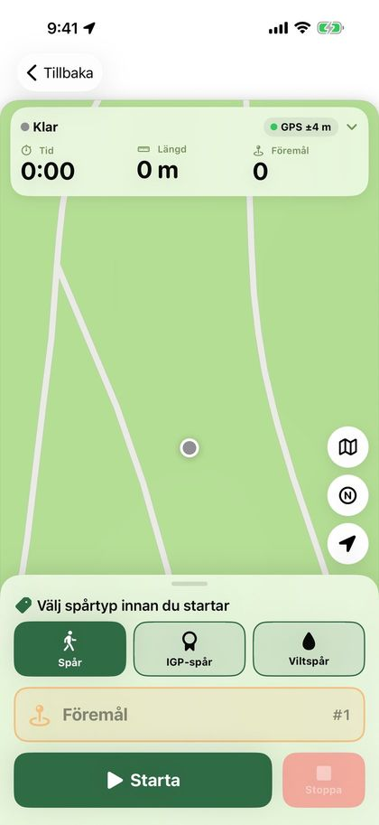
På viltspår ersätts ”Föremål” av tre knappar:
- ”Sårbädd” lägger ut en sårbädd där du står. Den visas som en mörkröd droppe på kartan.
- ”Blodavbrott” markerar att det inte finns blod härifrån. Knappen heter ”Blod igen” så länge blodavbrottet varar. Tryck på den där blodet börjar igen. Blodavbrottet visas som en streckad vit linje ovanpå spåret.
- ”Vilt” markerar var viltet ligger, med en brun målflagga på kartan.
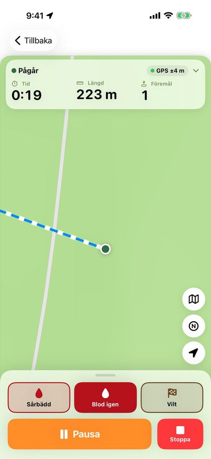
Där viltspåret börjar visas ”Skottplats” med en pil för flyktriktningen. Efter ”Stoppa”, och senare i spåröversikten, väljer du ”Flyktriktning”: ”Automatisk” (utifrån spårets första 15 meter), en kompassriktning eller ”Ingen pil”. Stäng av ”Visa flyktriktning för hundföraren” när flyktriktningen inte ska vara markerad. Skottplatsen och pilen visas även på okänt spår.
I kortet ”Blod och spårsko” anger du blodmängden i dl (valfritt) och slår på eller av ”Spårsko/klöv”. Under fältet ser du blod per 100 meter spår. Mindre blod per 100 meter gör spåret svårare. Dina senaste värden föreslås nästa gång.
Viltspår har egna val för spårets ålder, från 30 minuter till 24 timmar (se ”Spårets ålder”).
När hunden spårar viltspåret räknas sårbäddar och vilt som föremål. Aviseringen säger ”Nära sårbädd” eller ”Nära vilt”, och fyndet registreras som ”Registrerat som hittat: Sårbädd”. Före ett blodavbrott och innan blodet börjar igen aviserar appen med ”Blodavbrott” och ”Blod igen” (se ”Aviseringar och röstaviseringar”).
Spåröversikten och PDF:en visar ”Sårbäddar, vilt och blodavbrott” med längden på varje blodavbrott, samt blodmängd och spårsko. Blodmängden finns också med i hundrapporten och på bilden för sociala medier.
05
Föremål
- Stå där föremålet läggs och tryck på ”Föremål”. Föremålet sparas direkt, med nummer och position.
- Vill du lägga till en beskrivning, till exempel ”strumpa” eller ”träkloss”, trycker du på ”Beskriv” i meddelandet som visas.
- Tryckte du av misstag? Tryck på ”Ångra” i meddelandet.
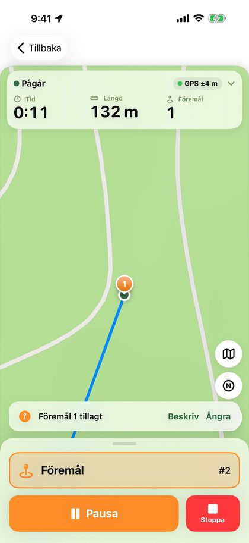
Föremålen numreras i den ordning du lägger ut dem. Du kan också skriva eller ändra beskrivningen senare i spåröversikten, under ”Föremål”.
Färg och ikon för föremålen väljer du under Inställningar › Karta och spår. Valet gäller alla kartor, även i PDF:en och på bilden för sociala medier.
Tips: Om telefonen inte har hittat din position än sparas inte föremålet. Vänta några sekunder tills spåret börjar ritas och försök igen.
06
Spara spåret
När du trycker på ”Stoppa” öppnas arket ”Spara spår”.
- ”Spara” sparar spåret och tar dig tillbaka till hemskärmen. Spåret finns under ”Redo att spåra”.
- ”Exportera” låter dig välja Trax-fil, GPX eller PDF. Välj ”Till en annan Trax-användare” för att skicka spåret till hundföraren.
- ”Fortsätt spåret” tar dig tillbaka till kartan om du tryckte på ”Stoppa” för tidigt.
Du kan ge spåret ett namn. Om du lämnar fältet tomt får spåret ett namn med datum och klockslag.
Under ”Underlag” kan du skriva vad spåret går över, till exempel skogsmark, grus eller äng. Hundföraren ser underlaget på spåret, även när du skickar det till en annan telefon.
Under ”Spårets ålder” väljer du hur länge spåret ska ligga innan hunden spårar (se ”Spårets ålder”). På viltspår visas även korten ”Skottplats” och ”Blod och spårsko” (se ”Spårtyp och viltspår”).
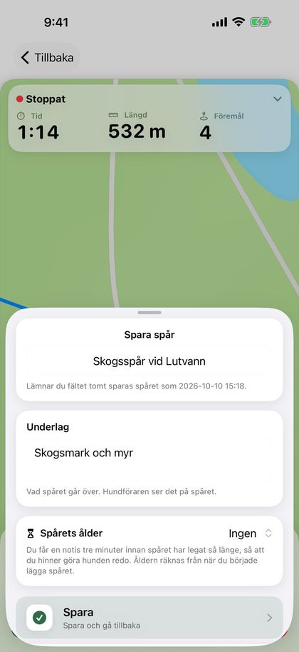
07
Spårets ålder
Spårets ålder är tiden från att du började lägga spåret tills hundföraren startar spåret. Den räknas upp av sig själv och visas både medan spåret väntar och under spårningen. När spåret har spårats låses åldern och sparas med spåret.
Vill du få besked när spåret har legat tillräckligt länge väljer du spårets ålder i arket ”Spara spår”: ”Ingen”, 15, 30, 45, 60 eller 90 minuter, 2 timmar, eller ”Anpassad …” med timmar och minuter (högst 48 timmar). Ditt senaste val sparas. På viltspår är valen 30 minuter och 1, 2, 3, 6, 12, 18 och 24 timmar, och viltspår kommer ihåg sitt eget val.
Första gången frågar telefonen om Trax får skicka notiser. Tre minuter innan tiden är ute får du notisen ”Spåret ”…” är klart om 3 min (spårets ålder 30 min). Gör hunden redo.” Låsskärmen och Dynamic Island räknar ner och visar sedan ”Spåret är klart” med spårets ålder tills spåret startas. Tryck på notisen eller nedräkningen för att öppna spåret.
Om spårets ålder är över 8 timmar visas ingen nedräkning på låsskärmen, bara notisen innan spåret är redo.
Kortet ”Spårets ålder” i spåröversikten visar nedräkningen för spår som väntar. Där kan du ändra spårets ålder eller välja ”Ingen”. Notisen och nedräkningen försvinner när spåret startas eller raderas.
Tips: Notisen är tidskänslig och kommer igenom fokuslägen som Sömn när ”Tidskänsliga notiser” är på för Trax. Om notiser är avstängda för Trax säger kortet till, med en knapp till Inställningar.
08
Störspår
Ett störspår är ett färskare spår som korsar huvudspåret, för att träna hunden att hålla sig på rätt spår.
- Lägg huvudspåret som vanligt och spara det.
- Öppna spåret från ”Redo att spåra” och tryck på ”Lägg störspår” i kortet ”Störspår”.
- Huvudspåret visas svagt på kartan. Tryck på ”Starta” och gå tvärs över huvudspåret. ”Pausa” och ”Stoppa” fungerar som när du lägger ett vanligt spår, men störspår har inga föremål.
- Tryck på ”Stoppa”. Du kan ange vem som lade störspåret under ”Lagt av”. Tryck sedan på ”Spara störspår”.
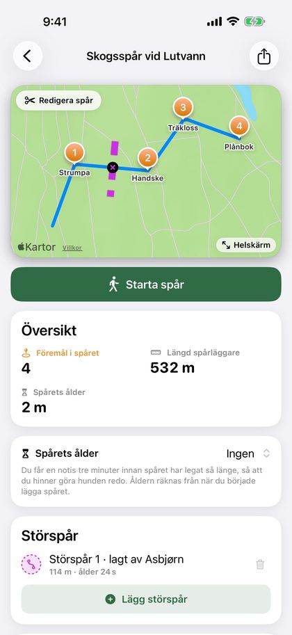
Störspår visas streckade i en egen färg, med ett litet kryss där de korsar huvudspåret. Kortet visar längden och störspårets egen ålder. Du kan lägga flera störspår och radera ett med papperskorgen innan hunden spårar.
När hunden spårar aviserar appen 12 meter före varje korsning med ”Korsande störspår” (se ”Aviseringar och röstaviseringar”). Störspåren visas också vid uppspelning, i PDF:en och på bilden för sociala medier, och följer med när du skickar spåret. På okänt spår är de dolda tills spåret stoppas.
09
Spåra
Som hundförare följer du hunden när den spårar. Spårläggarens rutt och föremålen visas på kartan, och din egen rutt ritas i en annan färg.
- Öppna spåret från ”Redo att spåra” och tryck på ”Starta spår”.
- Välj hunden som ska spåra. Har du bara en hund är den redan vald. Har du inte registrerat några hundar kan du starta direkt.
- Vill du spåra utan att se spåret slår du på ”Okänt spår” (se ”Okänt spår”).
- Tryck på ”Starta”.
- Följ hunden. Använd ”Pausa” och ”Fortsätt” vid behov.
- Tryck på ”Hittat” när hunden markerar ett föremål.
- Tryck på ”Stoppa” när spåret är klart.
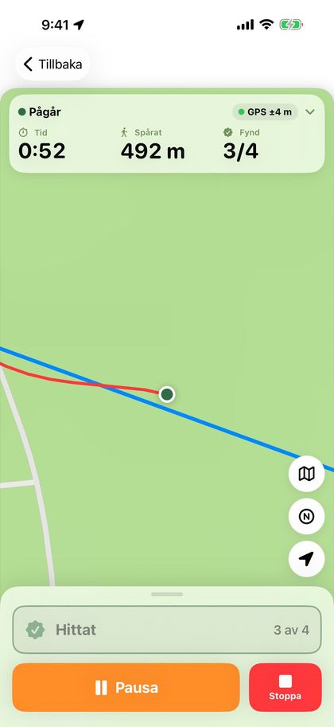
Innan du startar visar fältet högst upp hur gammalt spåret är, hur långt det är och hur många föremål det har. Under spårningen visar det tid, hur långt ni har spårat och hur många föremål som har hittats. Tryck på fältet för att se spårets ålder. Om GPS-signalen är svag visas samma ruta som när du lägger ett spår.
När du trycker på ”Starta” zoomar kartan in på dig, till samma vy varje gång. Kartan följer dig under spårningen, och om du zoomar in eller ut behåller kartan den zoom du valde. Kartknappen växlar mellan vanlig karta, topo (bara i Norge) och satellit, och N-knappen växlar mellan norr uppåt och en karta som vrider sig efter din riktning. Pilen ovanför kartknapparna visar vinden när hunden startade spåret.
Om du kommer för långt från det lagda spåret vibrerar telefonen och kortet ”Tappat spåret” visas högst upp med hur långt bort du är. Kortet försvinner när du är tillbaka på spåret, eller när du trycker på krysset. Läs mer om detta och de andra aviseringarna i ”Aviseringar och röstaviseringar”.
Registreringen fortsätter när skärmen är låst eller du byter app. Spåret visas på låsskärmen och i Dynamic Island, och på låsskärmen kan du trycka på ”Pausa”, ”Fortsätt” och ”Hittat”.
Om du trycker på ”Tillbaka” efter att du har startat frågar appen ”Avsluta hundens spår?”. Du kan stoppa och spara, pausa spåret eller välja ”Släng hundens spår”. Ett pausat spår fortsätter när du öppnar spåret igen. ”Släng hundens spår” raderar bara det ni har spårat. Spåret som lades finns kvar under ”Redo att spåra”.
Om appen stängs mitt under ett spår, till exempel för att telefonens batteri tog slut, har spåret sparats löpande. Spåret finns under ”Redo att spåra” med ”Spåret pågår”. Öppna spåret och tryck på ”Starta spår”, så fortsätter spåret från paus. Tiden som appen var stängd räknas inte in i tidsåtgången.
10
Okänt spår
Spåra utan att se var spårläggaren gick, som på prov.
Slå på ”Okänt spår” innan du trycker på ”Starta”. Reglaget är alltid avstängt när du öppnar spåret, så du slår på det varje gång.
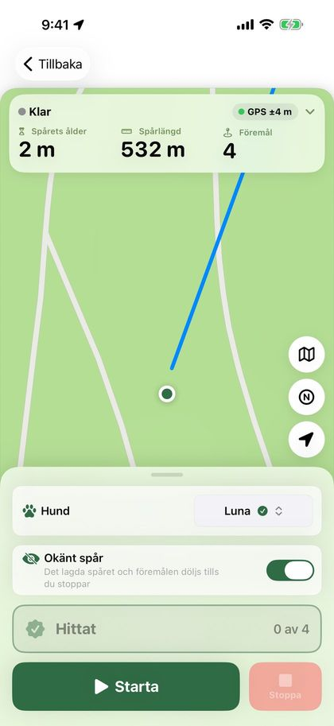
- Det lagda spåret, föremålen, blodavbrotten, störspåren och vinklarna är dolda på kartan tills du trycker på ”Stoppa”. Skottplatsen och flyktriktningen på viltspår visas ändå.
- Du får inga aviseringar under spårningen, varken om föremål, blodavbrott, tappat spår eller korsande störspår, och föremål läses inte upp.
- Fältet högst upp visar bara hur många föremål som har hittats, inte hur många det finns.
- ”Hittat” registrerar närmaste föremål, oavsett hur långt bort det är.
Om du behöver se spåret, till exempel för att ni har kommit vilse, trycker du på ”Visa spåret”. Då visas allt, och spåret räknas inte längre som okänt.
Spåröversikten och PDF:en visar ”Okänt spår”, och när spåret visades om du tryckte på ”Visa spåret”.
11
Registrera fynd
När du kommer inom valt avstånd från ett föremål (12 meter som standard) visas en banner med nummer, beskrivning och avstånd. Telefonen vibrerar, även med låst skärm. Om GPS:en är osäker väntar appen med aviseringen tills positionen är bättre. Du väljer avstånd och aviseringstyp under Inställningar › Aviseringar (se ”Aviseringar och röstaviseringar”).
- Tryck på ”Markera som hittat” i bannern, eller på den stora ”Hittat”-knappen längst ner. Välj ”Senare” om du vill vänta.
- Om du inte trycker på något stängs bannern av sig själv när du har kommit en bit förbi föremålet (25 meter, eller dubbla valda avståndet om det är längre), eller när du närmar dig nästa föremål. Föremålet registreras då inte som hittat, men du kan bocka av det när du stoppar.
- ”Hittat” kan bara tryckas när du är inom valt avstånd från ett föremål som inte har hittats än, både i appen och på låsskärmen. Om ingen banner visas registreras det närmaste.
- Tryckte du av misstag? Tryck på ”Ångra” i meddelandet som visas längst ner.
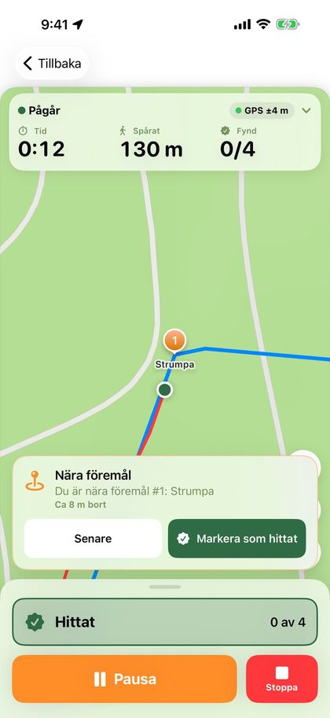
När du stoppar visar arket ”Spåret är klart” en lista över föremålen. Fynd som du registrerade under spårningen är redan avbockade. Rätta till om något saknas.
I samma ark kan du ge spåret en bedömning (se ”Bedömning och vinklar”) och skriva anteckningar, till exempel om förhållandena eller hur hunden arbetade. Anteckningarna kommer med i PDF:en. Om spårläggaren inte fyllde i underlaget kan du göra det här. Tryck på ”Spara” när du är klar.
”Exportera” i samma ark delar spåret som Trax-fil, GPX eller PDF direkt. Vill du visa upp spåret trycker du på ”Dela på sociala medier” (se ”Dela och ta emot spår”).
Tips: Vill du spåra utan aviseringar och utan att se det slår du på ”Okänt spår” innan du startar (se ”Okänt spår”).
12
Aviseringar och röstaviseringar
Medan hunden spårar kan telefonen avisera dig med vibration, ljud och röst. Alla aviseringar ställs in under Inställningar › Aviseringar.
- ”Föremål i närheten”: när du är inom ”Avstånd till föremål” (5–50 meter, 12 meter som standard). På viltspår gäller det sårbäddar och vilt.
- ”Blodavbrott” och ”Blod igen” (viltspår): innan du kommer fram till ett blodavbrott, och innan blodet börjar igen efter det. Välj avståndet under ”Avstånd till blodavbrott” (20 meter som standard).
- ”Tappat spår”: när du har varit längre från det lagda spåret än ”Avstånd från spåret” en stund (5–30 meter, 15 meter som standard). Appen aviserar inte förrän du har varit på spåret en gång.
- ”Korsande störspår”: 12 meter före varje ställe där ett störspår korsar spåret. Korsningar som ligger nära varandra ger en avisering.
Alla dessa är på som standard. Huvudreglaget ”Aviseringar” högst upp slår på och av alla aviseringar, även röstaviseringarna. Aviseringarna visas också på låsskärmen. På okänt spår ges inga aviseringar. Ändringar för blodavbrott, tappat spår och korsande störspår gäller från nästa gång du startar ett spår.
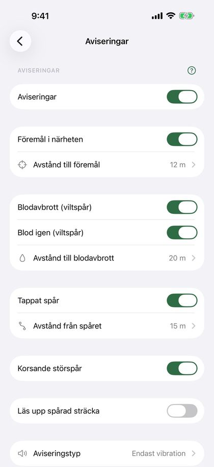
Under ”Aviseringstyp” väljer du ”Endast vibration” eller ”Vibration och ljud”. Ljudet spelas bara när telefonen inte är på ljudlös eller i Stör ej.
Röstaviseringar: slå på ”Läs upp aviseringar” under ”Aviseringstyp”. Då läser telefonen upp alla aviseringar som du har slagit på, till exempel ”Föremål 3, cirka 11 meter bort”, ”Blodavbrott om 20 meter” eller ”Tappat spår, cirka 18 meter från spåret”. Tryck på ”Spela upp exempel” för att höra rösten. Röstaviseringarna hörs i AirPods eller högtalaren, även med låst skärm och när telefonen är på ljudlös. Musik sänks medan meddelandet läses upp.
Om du slår på ”Läs upp spårad sträcka” under Aviseringar läser telefonen också upp hur långt ni har spårat, till exempel ”300 meter spårat”. Under ”Hur ofta” väljer du var 100:e, 200:e eller 500:e meter, eller varje km. Detta gäller bara när ”Läs upp aviseringar” är på.
Tips: Med AirPods i öronen hör du röstaviseringarna utan att ta fram telefonen, och hunden störs inte av ljud från högtalaren.
13
Spåröversikten
Tryck på ett spår på hemskärmen för att se allt om det.
- Kartan visar båda rutterna och alla föremål. Tryck på ”Helskärm” för en större karta. Där växlar kartknappen nere till höger mellan vanlig karta, topo och satellit. Helskärm öppnas alltid med vanlig karta.
- ”Alternativ” uppe till vänster på kartan har ”Spela upp spåret” och ”Redigera spår”. På ett spår som inte har spårats än visas ”Redigera spår” där direkt.
- Resultatet visar hur många föremål som hittades, längden, spårets ålder, tidsåtgången och hunden.
- Spårade du med fel hund, eller glömde du välja hund? Tryck på ”Byt hund” eller ”Välj hund” på raden för hund och välj en annan hund eller ”Ingen hund”. Om du inte har registrerat några hundar står det ”Lägg till hund”.
- På kartan får hittade föremål en liten grön bock i hörnet och behåller sin färg och symbol, så att du ser om det var en sårbädd eller vilt. Föremål som inte hittades är grå. Hundförarens rutt är färgad efter hur långt från spåret den gick (se ”Avvikelse från spåret”), och små numrerade cirklar visar vinklarna i spåret (se ”Bedömning och vinklar”).
- ”Bedömning” under resultatet visar betyg, svårighetsgrad och lärdom.
- ”Avvikelse från spåret” visar hur nära spåret ni höll er.
- Spår som väntar har korten ”Spårets ålder” och ”Störspår” (se de avsnitten).
- Under ”Föremål” ser du varje föremål med beskrivning och resultat. Tryck på ett föremål för att skriva eller ändra beskrivningen. På viltspår heter kortet ”Sårbäddar, vilt och blodavbrott”.
- ”Spårtyp”, underlag och anteckningar finns längre ner. Tryck på dem för att ändra.
- Delningsknappen högst upp exporterar spåret som Trax-fil, GPX eller PDF, och skapar bilden för sociala medier för avslutade spår.
- ”Detaljer” visar ”Spårläggning startad”, ”Spårläggning klar”, ”Spårning startad” och ”Spårning klar”, antal vinklar och om spåret spårades som okänt spår. Tryck på ”Byt namn” för att ge spåret ett nytt namn.
- ”Radera spår” längst ner raderar spåret när du har bekräftat.
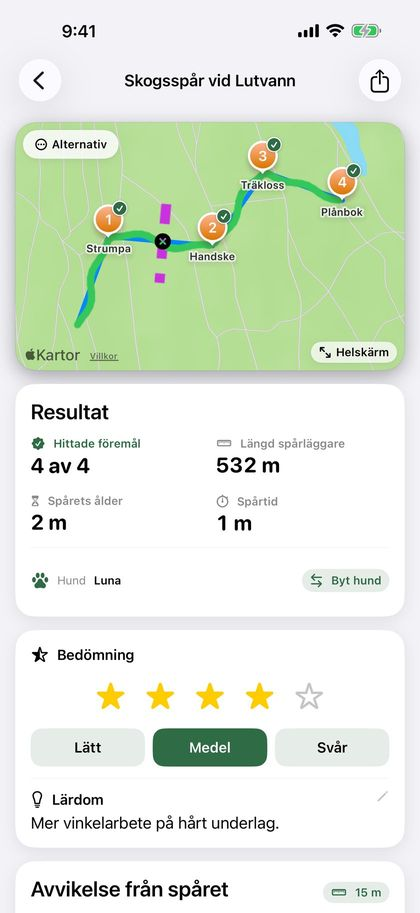
14
Bedömning och vinklar
Ge varje spår en bedömning och se hur många vinklar spåret hade.
Kortet ”Bedömning” finns i arket ”Spåret är klart” och under resultatet i spåröversikten. Allt är valfritt:
- ”Betyg”: 1 till 5 stjärnor.
- ”Svårighetsgrad”: ”Lätt”, ”Medel” eller ”Svår”.
- ”Lärdom”: en rad om vad som gick bra, eller vad som behöver tränas mer.
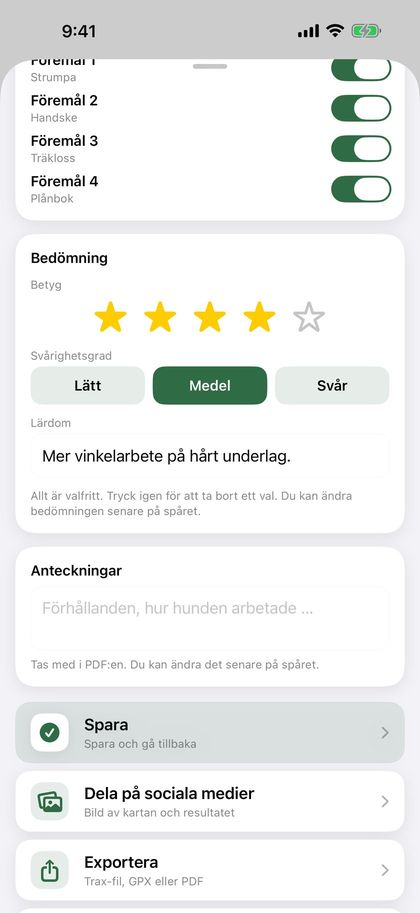
Tryck igen på vald stjärna eller svårighetsgrad för att ta bort valet. I spåröversikten trycker du på stjärnorna eller svårighetsgraden för att ändra, och på lärdomen för att skriva den.
Hundens utvecklingsdiagram har valet ”Betyg”, med punkterna färgade efter svårighetsgrad: grönt är lätt, orange medel och rött svårt. PDF:en visar betyg och svårighetsgrad, och lärdomen som en egen del. Hundrapporten har snittbetyget på försättsbladet. Bedömningen följer med när du skickar spåret som Trax-fil.
Vinklar: Trax räknar själv vinklarna i det lagda spåret, där spåret svänger minst 45 grader. Små krökar och GPS-brus räknas inte. ”Detaljer” i spåröversikten visar ”Vinklar”, och kartan har små numrerade cirklar vid varje vinkel. PDF:en har raden ”Vinklar i spåret”. Spår under 30 meter får inga vinklar, och på ett okänt spår är de dolda tills spåret stoppas.
15
Spela upp spåret
Se hur hunden arbetade, ovanpå spåret som spårläggaren lade.
- Öppna ett avslutat spår, tryck på ”Alternativ” uppe till vänster på kartan och välj ”Spela upp spåret”.
- Tryck på uppspelningsknappen. En tass visar var hunden var, och rutten ritas upp efter hand.
- Dra i tidslinjen för att hoppa framåt eller bakåt. Under tidslinjen ser du hur långt in i spåret du är, och klockslaget.
- Tryck på hastighetsknappen för att spela upp 5, 10, 30 eller 60 gånger snabbare än verklig tid.
Föremålen får en grön bock när de hittas. På äldre spår, där tidpunkten för fyndet inte sparades, hittas föremålet där hunden var som närmast det.
16
Redigera spår
Klipp bort början eller slutet av ett spår, till exempel en lång svans för att du glömde att trycka på ”Stoppa”.
- Öppna spåret, tryck på ”Alternativ” uppe till vänster på kartan och sedan på ”Redigera spår”. På ett spår som hunden inte har spårat ännu visas ”Redigera spår” där direkt.
- Har spåret både spårläggarens och hundförarens spår väljer du överst vilket du vill klippa. Du kan klippa båda innan du sparar.
- Dra i handtagen under kartan: det vänstra är ny start, det högra nytt slut. Det som klipps bort blir grått på kartan. Använd pilarna för att flytta en punkt i taget.
- Tryck på ”Spara”. Längd, tid och spårets ålder räknas om, och avvikelsen från spåret uppdateras också.
Finns det föremål eller fynd i delen som klipps bort frågar appen om de ska flyttas till närmaste punkt eller tas bort. Ett fynd som tas bort räknas som ej hittat.
Viktigt: Klippningen kan inte ångras när du har sparat. Punkterna som klipps bort raderas.
17
Avvikelse från spåret
Se hur väl du och hunden följde spåret som spårläggaren lade.
Kortet ”Avvikelse från spåret” finns under resultatet i spåröversikten för avslutade spår. Det visar:
- Hur stor del av din rutt som låg inom gränsen för ”på spåret”.
- ”Tappade spåret”: hur många gånger hundföraren var utanför gränsen i minst 20 meter i följd (eller dubbla gränsen om det är längre), och hur långt in i spåret det hände första gången.
- Genomsnittlig avvikelse och största avvikelse.
Gränsen väljer du med knappen uppe till höger i kortet: 5, 10, 15, 20 eller 30 meter. Standard är 15 meter. Valet sparas och gäller även PDF:en och ”På spåret” i hundsammanfattningen. Aviseringen om tappat spår under spårningen har en egen gräns under Inställningar › Aviseringar.
På kartan, i helskärm och vid uppspelning är hundförarens rutt färgad: grön inom gränsen, orange upp till dubbla gränsen och röd längre bort. Medan hunden spårar används fortfarande färgen du har valt under Inställningar › Karta och spår.
Tips: Avvikelsen mäts från hundförarens GPS-spår, inte hundens. GPS:en slår ofta fel med några meter, så små avvikelser betyder lite.
18
Väder
Trax hämtar vädret på platsen där spåret startade, för tidpunkten du startade: temperatur, vind och vindriktning, nederbörd och luftfuktighet. När hunden startar spåret hämtas vädret på nytt, eftersom vinden kan ha vänt eller ökat medan spåret åldrades. Väderdata sparas tillsammans med spåret och finns med i PDF-exporten, i kolumnerna ”Lagt” och ”Spårat”.
Medan spåret läggs och medan hunden spårar visar en liten pil på kartan, ovanför kartknapparna, vart vinden blåser och styrkan i m/s. Pilen pekar dit vinden blåser, alltså dit vittringen går, och vrider sig med kartan. Tryck på pilen för att se till exempel ”Vind från SV, 4 m/s”. Vinden hämtas bara vid start och uppdateras inte under tiden. Pilen finns också med på kartan i PDF:en och på bilden för sociala medier.
Saknar ett spår väderdata, till exempel för att du var utan täckning, trycker du på ”Hämta väder” i spåröversikten. Det kräver internet.
Väderdata kommer från Apple Väder. Under väderkortet hittar du Apple Väder-märket och en länk till Apples lista över andra datakällor.
19
Dela och ta emot spår
Spårläggare och hundförare behöver inte använda samma telefon. Spårläggaren skickar spåret som en Trax-fil.
- När spåret är lagt trycker spårläggaren på ”Exportera” › ”Till en annan Trax-användare”, eller på delningsknappen överst i spåröversikten.
- Skicka filen med AirDrop eller e-post. AirDrop fungerar bäst, eftersom spåret då öppnas direkt i Trax hos mottagaren.
- Från e-post eller Filer trycker mottagaren på filen. En förhandsvisning visar karta, längd, antal föremål och underlag. Tryck på delningsknappen och välj Trax.
- Trax visar ”Spår mottaget” med längd och antal föremål. Välj ”Starta spår nu” eller ”Spara till senare”. ”Avbryt” stänger utan att importera.
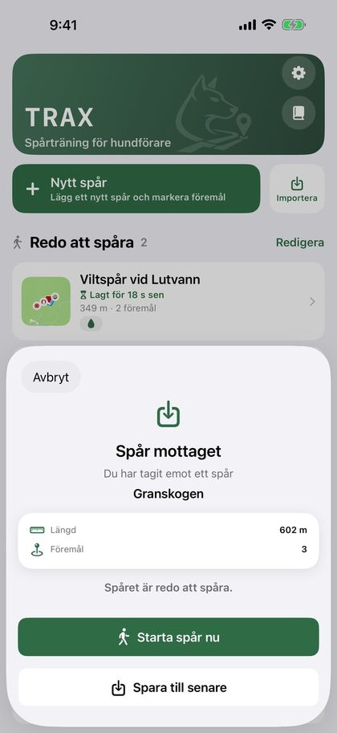
Viktigt: Skicka inte spåret med Meddelanden. Om meddelandet går som sms i stället för iMessage kommer filen inte fram, och det är svårt att veta i förväg vilket det blir.
Filen innehåller spårläggarens rutt, föremålen med beskrivning, underlaget, spårtypen, störspåren och allt som hör till ett viltspår. Har hunden redan spårat spåret följer även hundens rutt och bedömningen med, och mottagaren får bara valet ”Spara”. Spåret hamnar då under ”Avslutade spår”.
Du kan också trycka på ”Importera” på hemskärmen och välja en fil från appen Filer. GPX-filer från andra appar och GPS-enheter fungerar också. Välj ”GPX (andra appar)” när du vill öppna spåret i en annan kartapp.
Har spårläggaren ingen iPhone? Då kan spåret läggas i vilken GPS-app som helst som sparar GPX-filer. Spårläggaren sparar en waypoint där varje föremål läggs ut, exporterar spåret som GPX och skickar filen med e-post. Du trycker på filen och väljer Trax, precis som med en Trax-fil.
Waypointerna blir föremål, med namnet som beskrivning, och du får en avisering när hunden närmar sig dem. Föremål kan inte läggas till i Trax i efterhand, så utan waypoints i filen kommer spåret utan föremål. Skicka ett spår per fil. Har filen två spår läser Trax det andra som hundens rutt.
Spåret får märket ”Exporterat” först när delningen är klar, oavsett om du delar en Trax-fil, GPX eller PDF. Om du avbryter delningsarket markeras det inte.
Dela på sociala medier: När hunden har spårat ett spår trycker du på ”Dela på sociala medier” under ”Spara”. Du ser bilden först: en satellitkarta med spåret och föremålen, hundens namn och ett kort med längd, spårets ålder, antal hittade och spårtyp. Tryck på ”Dela bilden” och välj Instagram, Facebook, Snapchat eller en annan app, eller ”Spara bild” för att spara den i Bilder. Spåret sparas inte när du delar, så kom ihåg att trycka på ”Spara” efteråt. Äldre spår delar du med delningsknappen överst i spåröversikten.
Tips: Vill ni ha ett gemensamt arkiv i träningsgruppen? Skapa en mapp i iCloud Drive i appen Filer och dela den med gruppen. Välj ”Spara i Filer” när du exporterar ett spår, och lägg Trax-filen i den delade mappen. De andra trycker på filen i mappen och öppnar den i Trax, precis som från e-post.
20
PDF-rapport
I spåröversikten trycker du på delningsknappen överst, väljer ”PDF (flera)” och markerar ett eller flera avslutade spår. Du får en PDF med karta, nyckeltal, föremål, fynd, underlag, anteckningar, bedömning och väder för varje spår, redo att skicka eller skriva ut.
Nyckeltalen innehåller också spårtyp, vinklar, ”Inom X m från spåret” och ”Tappade spåret”, och hundförarens rutt är färgad efter avvikelse på kartan, med gränsen du har valt i spåröversikten (se ”Avvikelse från spåret”). Viltspår har också blodmängd, spårsko/klöv och blodavbrotten. Varje föremål listas med koordinat i formatet du har valt under Inställningar › Karta och spår, och hur noggrann GPS:en var när föremålet lades ut, till exempel ”±4 m noggrannhet”. Äldre spår sparade inte noggrannheten, och då står det ”noggrannhet okänd”.
Vill du ha alla spår för en hund trycker du på ”Visa alla” vid ”Senaste spår” på hemskärmen och sedan på dokumentknappen uppe till höger. Välj hund, och slå på ”Välj period” om du bara vill ha spåren mellan två datum. PDF:en får ett försättsblad med sammanfattning, snittbetyg och en lista över spåren, följt av en sida per spår. Spåren i rapporten får märket ”Exporterat”.
Tips: PDF-rapporten fungerar bra som träningsdagbok eller för att visa din instruktör.
21
Hundar
Registrera hundarna du tränar med, så ser du vilken hund som spårade varje spår.
- Gå till Inställningar › Mina hundar.
- Tryck på ”Lägg till hund” och skriv namnet.
- Tryck på ”Spara”.
När du har registrerat hundar väljer du hund när du startar ett spår, inte när spåret läggs. Har du bara en hund är den förvald. Hunden visas i spåröversikten och i PDF-rapporten.
Du kan byta hund i efterhand i spåröversikten. På sidan ”Avslutade spår” (tryck på ”Visa alla” på hemskärmen) kan du visa spåren för en hund i taget med knapparna överst.
När du väljer en hund visar kortet fyra siffror: ”Spår”, ”Hittade”, ”Senaste 30 dagarna” och ”På spåret” (genomsnittet av hur stor del av varje spår som låg inom gränsen för avvikelse). Under finns ”Utveckling”: ett diagram över hundens avslutade spår över tid. Välj vad diagrammet ska visa: ”Spårets ålder”, ”Längd”, ”Hittade”, ”På spåret”, ”Betyg” eller ”Blod” (blodmängd per 100 meter, när hunden har minst två viltspår med blodmängd). Diagrammet visas när hunden har minst två spår. Saknar spåren värdet du har valt står det att det finns för få spår för att visa ett diagram.
Om du raderar en hund behåller spåren hundens namn. Hunden visas under Inställningar › Mina hundar › ”Tidigare hundar” så länge den har spår, och där kan du slå av reglaget för att dölja den i hundfiltret. Spåren finns kvar under ”Alla”.
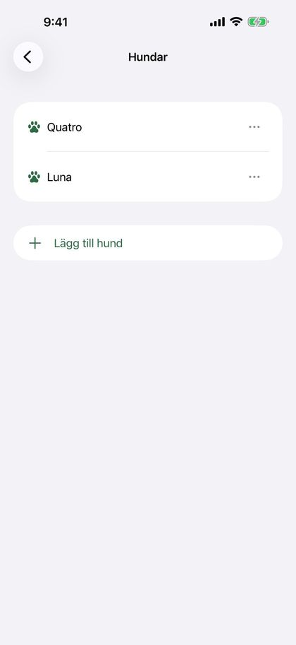
22
Inställningar
Överst i Inställningar finns ”Mina hundar”, och under den en rad för varje sida: Aviseringar, Karta och spår, Batteri, Säkerhetskopiering och Om Trax. Tryck på en rad för att öppna sidan.
- Aviseringar: aviseringar om föremål i närheten, blodavbrott och blod igen, tappat spår och korsande störspår, uppläsning av spårad sträcka, samt aviseringstyp med röstaviseringar. Se ”Aviseringar och röstaviseringar”.
- Karta och spår: välj färg och ikon för föremålsmarkörerna (siffra, kartnål, flagga, tass eller påse), ”Spårläggarens färg” och ”Hundförarens färg”. ”Vrid kartan efter min riktning” vrider kartan åt det håll du står medan du lägger spår eller hunden spårar; när det är av är norr alltid uppåt. Här väljer du också koordinatformat: decimalgrader (DD), UTM, grader/minuter/sekunder (DMS) eller MGRS.
- Batteri: ”Batterisparläge för GPS” drar mindre ström på långa spår. Spåret blir lite mindre detaljerat, men närhetsaviseringen och ”Hittat” fungerar som vanligt. Under inspelning visas batterinivån överst, och appen varnar vid 20 och 10 procent, även med låst skärm.
- Säkerhetskopiering: automatisk kopia till iCloud Drive, och säkerhetskopior du skapar själv. Se ”Säkerhetskopia och ny telefon”.
- Mina hundar: lägg till, byt namn på eller radera hundar. Under ”Tidigare hundar” kan du dölja raderade hundar i hundfiltret.
- Om Trax: ”Skicka feedback” öppnar ett mejl till mig med appversion, iOS-version och telefonmodell redan ifyllda. Skriv din fråga, ditt fel eller önskemål överst. ”Skriv en recension” öppnar Trax i App Store, där du kan ge stjärnor och skriva en recension. ”Integritetspolicy” öppnar integritetspolicyn på Trax webbplats.
Tips: Tryck på ”?” vid en sektion för att se en förklaring av inställningarna där. Tryck igen för att dölja den.
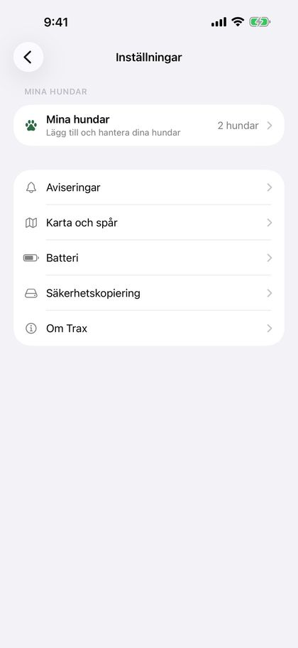
23
Säkerhetskopia och ny telefon
Ta vara på dina spår om du tappar bort telefonen eller byter till en ny.
”Automatisk kopia till iCloud Drive” under Inställningar › Säkerhetskopiering är på som standard. Trax lägger då en säkerhetskopia i mappen ”Trax” i din egen iCloud Drive när du lämnar appen efter en ändring. Under reglaget står det när den senaste kopian gjordes, eller att iCloud Drive är avstängt på telefonen.
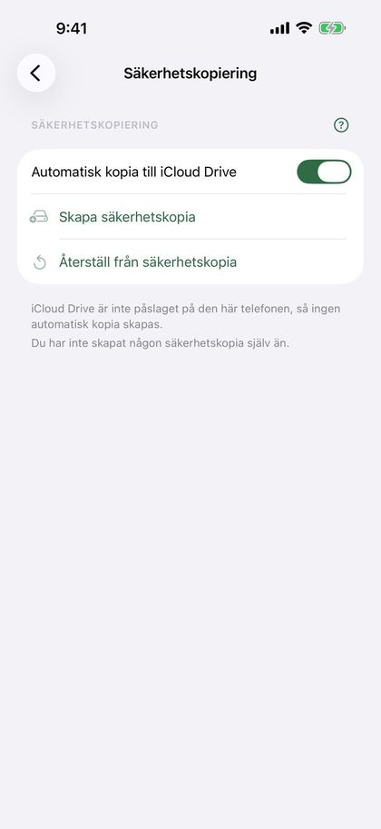
Du kan också skapa en säkerhetskopia själv med ”Skapa säkerhetskopia”. Du får en fil (.traxbackup) med alla spår och hundar, som du kan spara i Filer eller iCloud Drive, eller skicka till dig själv. Under knapparna står det när du senast skapade en.
- Ny telefon, eller Trax installerat på nytt: Trax frågar första gången om dina spår ska hämtas från iCloud Drive. Välj ”Återställ”.
- Har du en säkerhetskopia som du skapat själv trycker du på filen (den öppnas i Trax), eller väljer ”Återställ från säkerhetskopia” under Inställningar › Säkerhetskopiering.
- Trax visar hur många spår och hundar säkerhetskopian innehåller, och frågar innan något läggs till.
Återställningen lägger bara till spår och hundar som saknas. Inget raderas eller skrivs över. En hund med samma namn som en hund på telefonen blir samma hund. Allt sker på telefonen och i din egen iCloud Drive, utan konto.
24
Radera och återställa spår
Tryck på ”Redigera” på hemskärmen för att markera och radera ett eller flera spår. Du kan också öppna ett spår och trycka på ”Radera spår” längst ner på sidan. Du får alltid frågan innan något raderas.
Viktigt: Raderade spår kan inte återställas, om de inte finns i en säkerhetskopia. Exportera spåret som GPX eller PDF först om du vill spara det.
Om appen stängs mitt under en spårläggning, till exempel för att telefonens batteri tog slut, har spåret sparats under tiden. Nästa gång du öppnar Trax visas ”Ofullständig spårläggning” överst. Välj ”Fortsätt” för att lägga vidare, ”Avsluta” för att spara spåret som det är, eller ”Radera”.
Om appen stängs mitt under spårningen listas spåret under ”Redo att spåra” med ”Spåret pågår”. Öppna det och tryck på ”Starta spår” för att fortsätta från pausen. Vill du hellre börja om trycker du på ”Tillbaka” och ”Släng hundens spår”.
25
Tips och felsökning
- Spåret blir hackigt eller får luckor: kontrollera att Trax har platsåtkomst och att ”Exakt plats” är på.
- GPS är mindre exakt i tät skog, i branta dalar och mellan höga byggnader. Vänta gärna tills positionen har stabiliserat sig innan du trycker på ”Starta”.
- Strömsparläge kan ge färre GPS-punkter. Ladda telefonen före långa spår, eller slå på ”Batterisparläge för GPS” under Inställningar › Batteri.
- Ser du inte spåret på låsskärmen? Kontrollera att Live Activities är påslaget under Inställningar › Trax på din iPhone.
- Får du ingen notis om att spårets ålder är uppnådd? Kontrollera att notiser är på för Trax under Inställningar › Trax › Notiser på din iPhone, och slå på ”Tidskänsliga notiser” om du använder Fokus.
- Hör du inte röstaviseringarna? Kontrollera att ”Aviseringar” och ”Läs upp aviseringar” är på under Inställningar › Aviseringar › Aviseringstyp, och att volymen är uppskruvad. Tryck på ”Spela upp exempel” för att testa.
- Tar du inte emot spåret? Skicka det med AirDrop eller e-post, inte Meddelanden. Kontrollera att filnamnet slutar på .trax eller .gpx, och prova ”Importera” på hemskärmen.
- Frågor eller problem? Tryck på ”Skicka feedback” under Inställningar › Om Trax, eller skicka ett mejl till post@trax-dogtracking.no.
26
Integritet
Alla spår sparas på din telefon. Trax har inget konto och ingen egen server. Om du använder iCloud Drive lägger Trax en säkerhetskopia i mappen ”Trax” i din egen iCloud Drive. Det kan du stänga av under Inställningar › Säkerhetskopiering. Dina spår delas bara när du själv exporterar dem.
Bilden för sociala medier skapas på din telefon. Om du väljer ”Spara bild” frågar iOS om Trax får lägga till bilder i Bilder. Trax kan bara lägga till bilder, inte se dina bilder.
För att hämta vädret skickas positionen och tidpunkten där spåret startade, och där hunden startade spåret, till Apple Väder. Apple kopplar inte förfrågan till dig eller ditt Apple-konto, och inga träningsdata skickas.
Hela integritetspolicyn hittar du under Inställningar › Om Trax › Integritetspolicy.